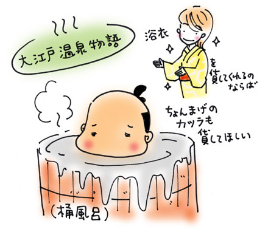

| 江戸の湯屋気分を味わうべく、「大江戸温泉物語」に行った。
お台場臨海副都心にある「江戸をテーマにした日帰り温泉施設」である。
噂によれば、来訪者は全員、江戸の町人になり、お湯に入り、江戸の街を散策し、飲んだり食べたり、あんまされたり、と江戸気分を満喫できるそうだ。
ちなみに、江戸時代の人々は風呂好きで、湯屋（ゆや）と呼ばれる公衆浴場に足繁く通っていたらしい。湯屋は町民の社交の場だった。浴場には湯女（ゆな）がいて、二階には男性専用の休憩所があり、今の銭湯とはずいぶん形態が違ったそう。そもそもは蒸し風呂で、「入れ込み湯」と呼ばれる混浴であった。
「大江戸温泉物語」の建物は、武家屋敷風。
下駄箱には「下足番」と書いてある。お客さんのアンケートを入れる箱は「目安箱」。入館手続きをするために「帳場」に行くと、「通行手形」がもらえる。お金を払い終わると、「越後屋」に行って浴衣を選んでください、と言われる。浴衣を着なければならないのね、と案内されるがままに歩く。
わたしは、だんだんと「これぞお江戸でござる」とでも言いたげな江戸アイテムの洪水に腹がたってきた。
温泉なのか、江戸なのか、どっちなのよ？
湯屋のイメージを求めてきたはずなのに、あまりのアミューズメントパークっぽさにすっかりやさぐれて、可愛い浴衣には目もくれず、横綱の浮世絵入り「雷電為右衛門」を選んだ。越後屋さんで浴衣を手配するオジサンたちは「ええ？」と顔を見合わせて驚いた。しかしそのうちのひとりが「それも粋かもしれない」と困った顔で微笑んだ。
浴場は「湯屋」と書いてあった。
フツーの浴場で、「洗い場は皆様が使うところでござる」など注意書きはお江戸調だったが、おけや腰掛けはプラスチック製で惜しい気がした。
お風呂のあとは「雷電為右衛門」の浴衣を着て、時代劇のセットのような江戸の町並みを歩いた。
日曜日の午後10時すぎだったが、けっこう混んでいた。カップルとアジア系外国人も多い。みな、手裏剣を投げたり、火の見やぐらをバックに記念写真を撮ったり、一同、楽しそうに江戸時代へタイプスリップ中。
全員が、浴衣を着ているせいだろうか。コミュニティ銭湯にありがちなムームーにはない色気が館内に漂っていた。湯あがりの無防備スッピン女子、輪投げに興じる川口能活似の好青年の浴衣がはだけると、生まれたままの姿が見えた。パンツはけよ、ゆるい、ゆるすぎる、ここゆるいよ、と笑いをこらえた。
わたしは「大江戸温泉物語」で江戸町人になりきれなかったが、江戸時代の湯屋の「混浴感」のようなものは満喫できたような気がする。
湯屋とは、このように男女がのびのびとして、笑顔が絶えないような、ゆるい社交場だったのではないか。混浴というと、老人のいこいの場というイメージがあったが、老いも若きも楽しめるところだったに違いない。
と、いちおう納得して、帰ることにした。
脱衣所で浴衣を脱いでいると、近くにギャルが座り込んだ。ケータイでぺっちゃぺっちゃ大声で話しこんでいる。
「超楽しいよ〜、超江戸〜。○○くん、こんど一緒に来ようよー」
ギャルは男（彼氏？）を誘っているようだった。聞けば、夕方から今まで（午後11時）滞在してたらしい。
あやしい……。
女友達と車で来た、とさかんに彼氏にアピールしているのだが……。その女友達の影も形もない……。電話のむこうで男が入場料を尋ねたのだろう、ギャルは曖昧に答えをかわした。自分ではビタ一文払ってない、とみた……。電話の彼氏は仕事中のようだった。ああ、何も知らないで、彼女の声を聞いて安心しているのだろう。
ギャルは混浴気分ではなく「混欲」にどっぷり浸かっていたに違いない。わたしは勝手にそう確信した。ギャル、おそるべし。
江戸時代から『超現代』にタイムスリップしたような衝撃に、よろめきながら、「大江戸温泉物語」をあとにした。

|